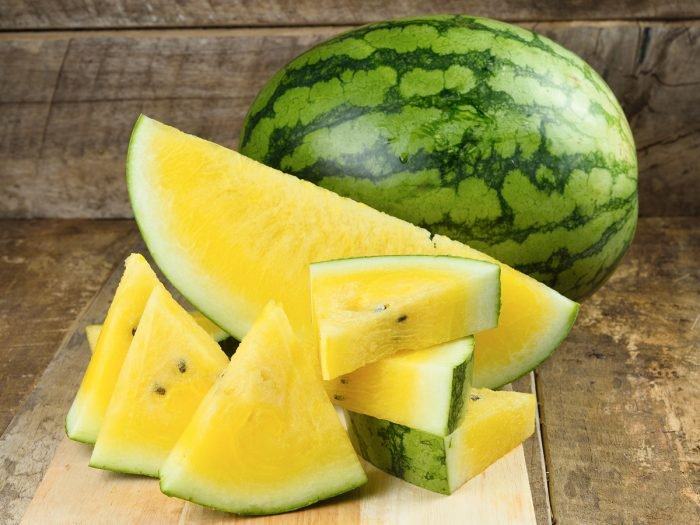
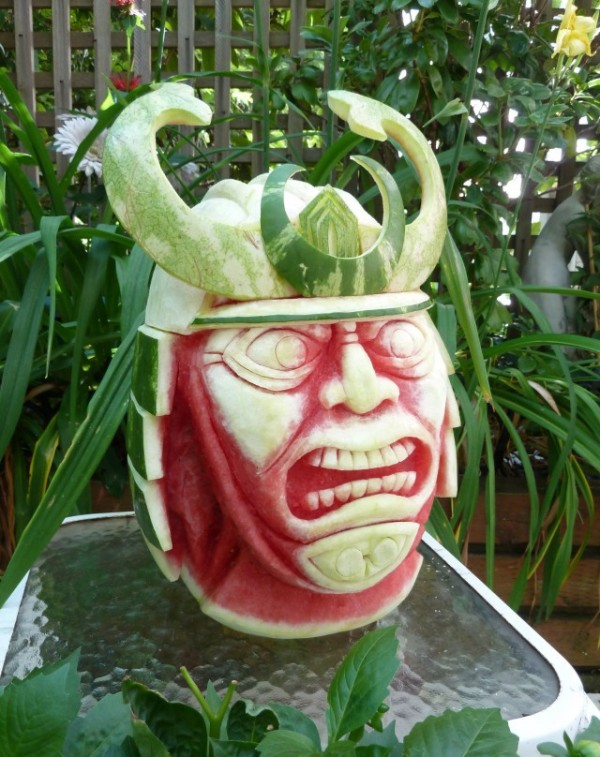

Citrullus lanatus is a plant species in the family Cucurbitaceae, a vine-like flowering plant originally from Africa. It is cultivated for its fruit. The subdivision of this species into two varieties, watermelons and citron melons, originated with the erroneous synonymization of Citrullus lanatus Matsum. & Nakai and Citrullus vulgaris Schrad. by L.H. Bailey in 1930. Molecular data including sequences from the original collection of Thunberg and other relevant type material, show that the sweet watermelon and the bitter wooly melon Citrullus lanatus Matsum. & Nakai are not closely related to each other. Since 1930, thousands of papers have misapplied the name Citrullus lanatus Matsum. & Nakai for the watermelon, and a proposal to conserve the name with this meaning was accepted by the relevant nomenclatural committee and confirmed at the International Botanical Congress in Shenzhen. The bitter South African melon first collected by Thunberg has become naturalized in semiarid regions of several continents, and is designated as a "pest plant" in parts of Western Australia where they are called pig melon.
 